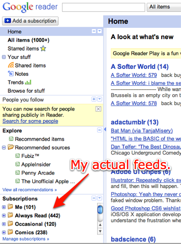

The Problem with Facebook's "Places"
Here’s the thing about Facebook that really gets under my skin: They are slowly incorporating the features from every other independent web application on the internet. This is not inherently a problem—companies get bigger and they begin to have the resources to widen their feature set—the issue is that Facebook doesn’t do these features any better.
Given the, shall we say, “quirks” of the Git documentation and interface, tips like these are pure gold.
I particularly like git checkout -t origin/feature and git push -u origin master, as feature branching is a large part of my work day.
An excellent Watchmen side story, by scans_daily.

I’m aware that with the Reader API, there are a plethora of third party clients for Google Reader now, providing iPhone and Mac OSX native apps for reading the feeds that Google cache for you. Given that, does anyone still use Google’s interface? How?
I do use it (although I never use the homepage—I’m straight to “All Items”). As for how, Ben may have missed the little collapse buttons on the side there in his rush to draw arrows on it:


Given how well Jeff Bezos usually prioritizes reading and legibility, why are his announcements on the Amazon frontpage always images of poorly rendered text?
In other news, I kind of want a new Kindle.
The story of "MVP Caribe", a baseball game mod for Latin America
I really love this story. It shows how good things can get on the Internet, with fans working together to provide a good product for a niche that big publishers ignore.